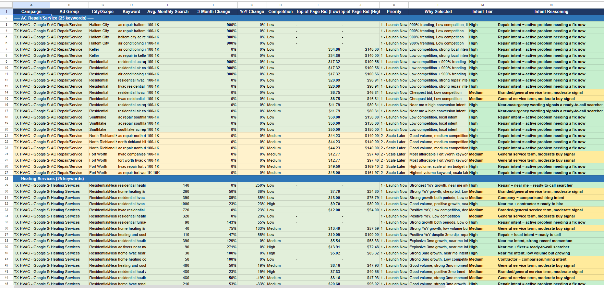
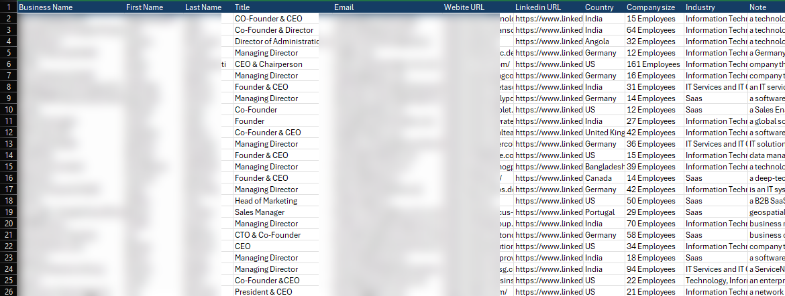
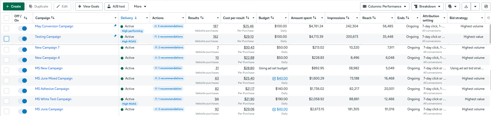
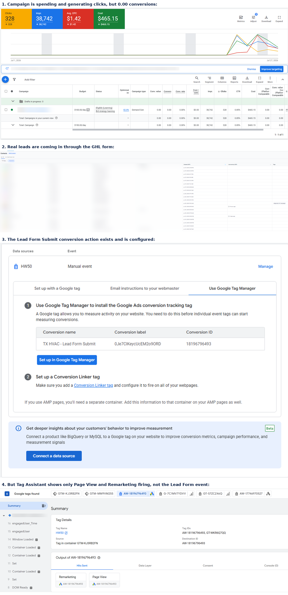
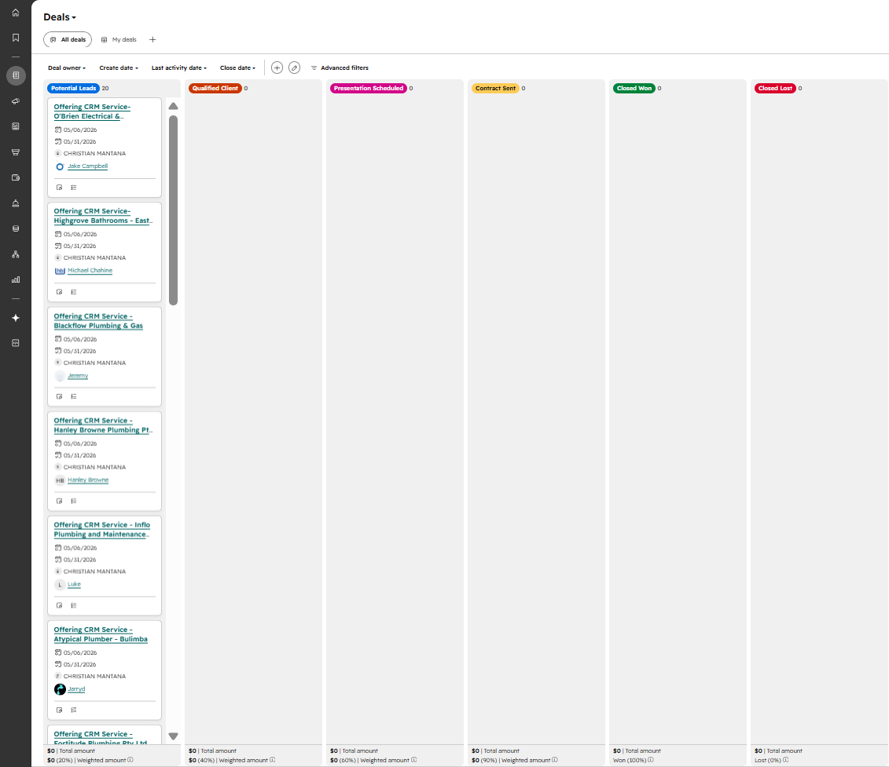
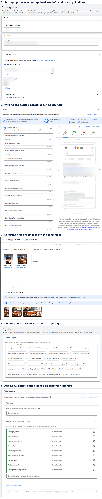
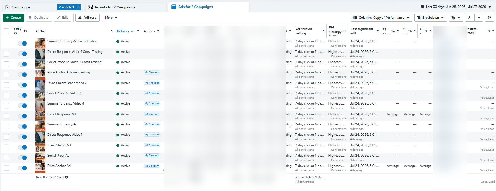

My Works
*Click a project to see how it was built.
TX HVAC: Google Search Ads Campaign Setup
Set up a Google Search Ads campaign from scratch for a residential HVAC client,
with the goal of turning search traffic into real, qualified leads.
A residential HVAC client needed a Google Search Ads campaign, and there wasn't one running yet. Just a business waiting for the right customers to find them, and search traffic that hadn't been turned into leads.
I started with Google Ads' Keyword Planner, digging through search terms across two service areas, AC Repair and Heating Services. By the time I was done, I had over 50 keywords, each one scored on search intent, competition level, trending growth, and bid cost. Not every keyword deserved the same attention, so I split them into two tiers. "Launch Now" for the ones with the strongest intent and best cost efficiency, and "Scale Later" for the ones worth testing once the campaign had room to grow.
The goal wasn't just to get clicks. It was to make sure every dollar spent went toward searches that were actually likely to turn into a real, qualified lead.
Keyword Research

Search Ads Monitoring

B2B Lead Generation: Structured Cold Outreach System
Cold outreach only works if you're reaching the right people, and most
prospect lists fail before the first email even goes out. Incomplete data,
wrong job titles, decision-makers buried under irrelevant contacts. The ask
here was straightforward but not easy: build a targeted B2B prospect list
of the people who actually make buying decisions, CEOs, Founders, Managers,
at companies worth pursuing.
I started in LinkedIn Sales Navigator, filtering by industry, job title,
and company type to narrow down who fit. But filters only get you so far,
so I went through each profile manually, checking it against the ideal
customer profile before it made the list. Once I had a solid set of
prospects, I ran them through Apollo.io to enrich the data, pulling
verified professional email addresses and confirming the details actually
held up.
By the end, I had 150 qualified B2B prospects. Not just
names on a spreadsheet, but people confirmed to be the right fit, with
verified contact information ready for outreach.

Business names, contact names, emails, and website URLs blurred to protect client and prospect privacy.
E-commerce Meta Ads: Campaign Management & Scaling
I joined a digital marketing agency, and one of the accounts I got assigned to was an e-commerce client, working alongside my team leader. The Meta Ads campaigns were already running when I stepped in, several of them, all competing for the same budget. My part wasn't building from zero. It was watching closely, figuring out which campaigns were actually earning their spend, and acting on that.
Every day I go through delivery status, cost per result, and ROAS across each campaign. Some get flagged "High Performing" or "High ROAS," and those are the ones I push further, increasing daily budget so more spend goes where it's already working. The rest I leave alone, or dig into why they're lagging.
It's a different kind of work than setup. Less about launching something new, more about paying attention long enough to know what deserves more fuel and what doesn't.

GHL Conversion Tracking: Diagnosing a Tag Discrepancy (In Progress)
Sometimes the problem isn't the ads, it's what happens after the click. On a
YouTube Ads campaign for this HVAC client, clicks were coming in and spend was
climbing, but conversions stayed flat at zero. Meanwhile, over in GHL, real leads
were showing up. Names, phone numbers, real people filling out the form.
I started by checking the conversion setup directly in Google Ads, confirming the
Lead Form Submit action existed and had a valid conversion ID and label. Then I
went further, using Tag Assistant to check what was actually firing on the live
page. That's where the gap showed up. Page View and Remarketing tags were firing
fine, but the specific Lead Form Submit event never triggered.
This is still an open investigation. The leads are real and verified. The next
step is figuring out why that specific event isn't wired up to fire on submit,
likely somewhere in how the form action is configured inside GHL.

HubSpot Pipeline Setup: Lead Tracking for Outreach
Cold outreach falls apart fast without a place to actually track it. Before this,
there wasn't a structured way to see where each prospect stood, who'd been
contacted, who qualified, who was ready for a follow-up. I built a deal pipeline
in HubSpot from scratch to fix that.
The pipeline moves prospects through clear stages: Leads, Qualified Leads,
Follow-up Schedule, Contract Send, Closed Won, and Closed Lost. Each deal gets
its own card, tagged with the business name, key dates, and whoever owns that
lead, so nothing sits in a spreadsheet disconnected from the rest of the process.
It's a small piece of infrastructure, but it's the kind of thing that makes
outreach actually manageable once the prospect list gets past a handful of names.

TX HVAC: Performance Max Campaign Build (In Progress)
The Search campaign was already live and pulling in leads, but there was more
ground to cover. Performance Max runs across Search, Display, YouTube, Discover,
and Gmail from a single campaign, letting Google's automation find customers
wherever they're most likely to convert. So I started building one.
First came the asset group itself, naming it, linking the final URL, and setting
the brand guidelines so every ad that gets generated still looks and sounds like
the business behind it. Small details, but they're the foundation everything else
builds on.
From there it was headlines. Fifteen of them, each one testing a different angle:
the $47 diagnostic offer, the "AC Hiding Something?" hook, straightforward
trust-builders like "Licensed HVAC Professionals." Google scores ad strength as
you go, so I kept refining until the asset group hit Excellent.
Next, creative images, the visual side of the same message, uploaded and cropped
to fit different placements across the network.
Then came the two pieces that steer where this all actually shows up. Search
themes, over twenty phrases covering everything from "ac repair near me" to
"attic insulation company," mapping to how real people search when something's
wrong with their AC. And audience signals, layering in interest categories like
Heating Systems and Air Conditioning Services, so the algorithm has a head start
on who to look for.
It's not live yet. The pieces are built and the ad strength is where it needs to
be, but the real test starts once this launches next to the Search campaign
already running.

TX HVAC: Cross-Testing Creative Formats (Live, Monitoring Results)
The account had two separate lanes running for this local business, one campaign
built around image ads, another built around video. Both were producing results
on their own, but they'd never actually been tested against each other's audience.
My team and I started asking a different question: what happens if the strongest
creative from one format gets dropped into the other?
We identified the top 2 performing ads in each campaign, then cross-placed them.
The top 2 image ads moved into the video campaign, and the top 2 videos moved
into the $47 image ads campaign. Same offer, same audience pool, just testing
whether creative that wins in isolation still wins once it's competing in a
different format's environment.
The swap is live now. We're watching how each creative settles in outside its
original campaign, comparing performance against the ads that were already
there. It's less about picking one winner up front and more about learning
whether strong creative travels, or whether image and video audiences respond
to genuinely different things.
